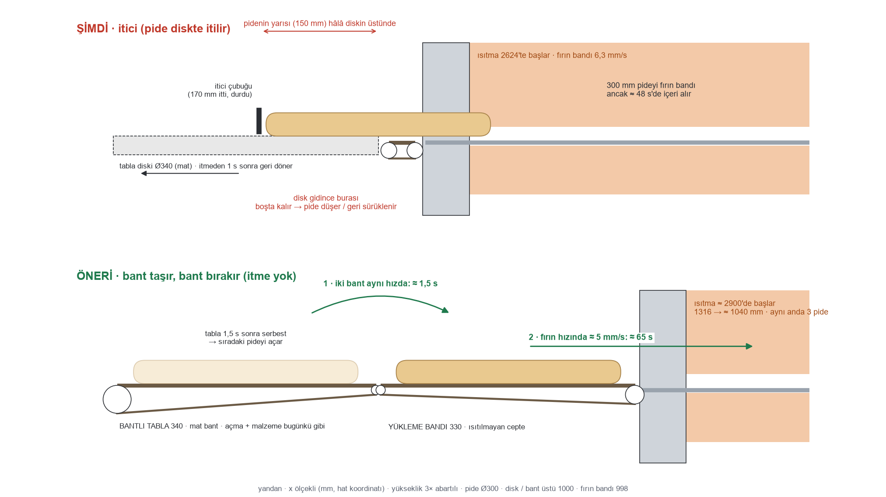

Tabla → fırın aktarma
Şu an—
0,0 s gerçek süre
Kapasite · tam yük (sim)
| 1. saat | 2. saat |
| BUGÜN (gerçekte çalışmaz) | 57 | 66 |
| A · tabla bekler | 32 | 39 |
| B · yükleme bandı · 3 pide | 44 | 55 |
| B′ · tünel içinde · 4 pide | 56 | 65 |
sipariş 20 sn'de bir · 3 akış ortalaması · 1. saat boş hattan
Kroki
Kavram animasyonu; üretim modeli değil. Karar verilen seçenek ana modele işlenecek.